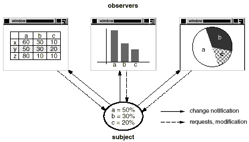
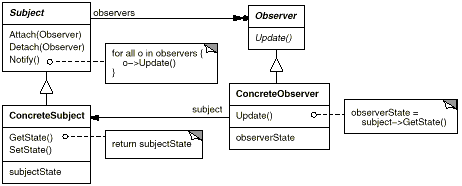
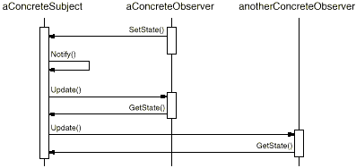
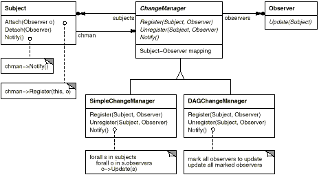

void MySubject::Operation (int newValue) {
BaseClassSubject::Operation(newValue);
// trigger notification
_myInstVar += newValue;
// update subclass state (too late!)
}
void Text::Cut (TextRange r) {
ReplaceRange(r); // redefined in subclasses
Notify();
}
add: self interestIn: anAspect
observer update: theChangedAspect


class Subject;
class Observer {
public:
virtual ~ Observer();
virtual void Update(Subject* theChangedSubject) = 0;
protected:
Observer();
};
class Subject {
public:
virtual ~Subject();
virtual void Attach(Observer*);
virtual void Detach(Observer*);
virtual void Notify();
protected:
Subject();
private:
List<Observer*> *_observers;
};
void Subject::Attach (Observer* o) {
_observers->Append(o);
}
void Subject::Detach (Observer* o) {
_observers->Remove(o);
}
void Subject::Notify () {
ListIterator<Observer*> i(_observers);
for (i.First(); !i.IsDone(); i.Next()) {
i.CurrentItem()->Update(this);
}
}
class ClockTimer : public Subject {
public:
ClockTimer();
virtual int GetHour();
virtual int GetMinute();
virtual int GetSecond();
void Tick();
};
void ClockTimer::Tick () {
// update internal time-keeping state
// ...
Notify();
}
class DigitalClock: public Widget, public Observer {
public:
DigitalClock(ClockTimer*);
virtual ~DigitalClock();
virtual void Update(Subject*);
// overrides Observer operation
virtual void Draw();
// overrides Widget operation;
// defines how to draw the digital clock
private:
ClockTimer* _subject;
};
DigitalClock::DigitalClock (ClockTimer* s) {
_subject = s;
_subject->Attach(this);
}
DigitalClock:: DigitalClock () {
_subject->Detach(this);
}
void DigitalClock::Update (Subject* theChangedSubject) {
if (theChangedSubject == _subject) {
Draw();
}
}
void DigitalClock::Draw () {
// get the new values from the subject
int hour = _subject->GetHour();
int minute = _subject->GetMinute();
// etc.
// draw the digital clock
}
class AnalogClock : public Widget, public Observer {
public:
AnalogClock(ClockTimer*);
virtual void Update(Subject*);
virtual void Draw();
// ...
};
ClockTimer* timer = new ClockTimer;
AnalogClock* analogClock = new AnalogClock(timer);
DigitalClock* digitalClock = new DigitalClock(timer);